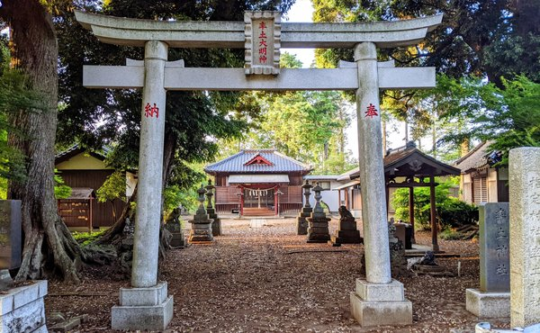

率土神社の催し
宗教ではなく、神納に所在する施設とその催しの紹介■率土神社とは

率土（そっと）神社は、神納村（※1）の鎮守様です。創建は聖武天皇の天平二（730）年10月1日と伝えられています。
御祭神は「埴安姫命（はにやすひめのみこと）」で、またの名を「埴山姫命（はにやまひめのみこと）」といわれる女神です。埴安姫は、土の神様で、農耕神から産業全体の守護神、さらに国土そのものです。
中国の詩経（しきょう）に「溥天之下莫非王土、率土之濱莫非王臣」(溥天（ふてん）のもと王土に非（あ）らざるはなく、率土の濱（ひん）王臣に非らざるはなし)という文章から取られています。天のあまねく履（おお）う所のもと、土地の続く限り津々浦々までという意味です。神納（かみおさ）まれる里の鎮守様として相応しい気宇雄大な社名です。
■率土神社縁起
〜袖ケ浦市指定文化財：有形文化財（古文書）〜
この縁起は、率土神社の祭神「埴安姫（はにやすひめ）」の由来と、正月の社祭の起源を述べたもの。江戸時代初期頃の写本とされ、書体・片仮名の字体から、その原本は室町時代に書かれたものと推定。
内容は、遠く天竺の摩伽国（まかだこく）を追われた埴安姫が日本に流れ着き、神納に移り住む様子が記されています。この記述から、異国の神様を祀る神社は国内でも珍しいもの。現在でも、神納の人たちが新たに移り住む人たちに寛容な風土があり、その源は神社の由来にあるかもしれません。
縦28cm、横２mの巻子1巻で構成。平成19（2006）年に修復しています。
■率土神社の主な催し
- 1月1日 歳旦祭（元旦祭）
- 1月15日 御飾焚き（小正月）
- 2月初旬 節分祭
- 2月9日 縁起式
- 10月中旬 例大祭
- 10月下旬 御上り（神無月神事）
- 11月中〜下旬 新穀祭（秋季大祭）
新年に合わせ、個々人の繁栄と農作物の豊作を祈願する催し。神納東区では、毎年、来場する区民の皆さまに甘酒のふるまいが行われています。
正月飾りを集め燃やす催し。しめ飾り、輪飾りを積み重ね、神社総代による祝詞奏上、玉串奉奠などの儀式を経て、火をつけて燃やします。燃やした灰は持ち帰り、家の周囲にまくと厄除けになると言われています。